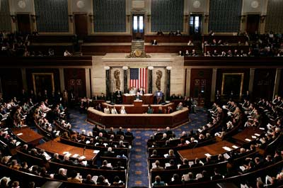

Mark Twain once said, "If voting made any difference, they wouldn't let us do it." Unfortunately for us, this becomes a reality as we step into the voting booths on the first Tuesday in November. As we go to vote for our candidates, we aren't actually voting for them. Instead, we are voting for a group of people who will in turn vote for the President. It's no secret what this process is called, it's the Electoral College.
In 1787 during the Constitutional Convention, the founding Fathers adopted the Electoral College, not because they found it attractive, but simply because it was the least objectionable alternative at the time. From then on the Electoral College has become a flawed concept that reinforces a two party system, discourages voters, and distorts the weight of our votes. Our society has grown used to this system, however, it's never too late to rectify it. I propose that instead of allowing the Electoral college to choose our President, we amend the Constitution to replace the process with a one-person, one-vote system.
Each individual in Wyoming counts nearly four times as much in the Electoral College as each individual in Texas. This is because Wyoming has (3) electoral votes for a population of 532,668 citizens, and Texas has (32) electoral votes for a population of almost 25 million. By dividing the population by electoral votes, we can see that Wyoming has one "elector" for every 177,556 people and Texas has one "elector" for about every 715,499.
| State | Political Party | Number of Electoral Votes |
|---|---|---|
| Georgia | Republican | 16 |
| Texas | Republican | 38 |
| California | Democratic | 55 |
| New York | Democratic | 29 |
| Florida | Swing | 29 |
| Ohio | Swing | 18 |
In order to implement the one-person, one-vte system, an amendment must be proposed by Congress and voted in with two-thirds majority in both the House and Senate, or by a Constitutional Convention called for by 2/3 of the State Legislature. Once approved, this system would allow our vote to directly county towards the election of our President, with everyone's vote being counted equally. Very little, if any, additional funding is necessary to implement this system as the majority of our state and federal elections are already run under the one-person, one-vote system. There would be no additional equpitment necessary, as we would continue to use our current voting equiptment. Enforcement of this policy will be conducted by the Federal and State governments. The Federal government is necessary to make sure that the Constitution is amended in order to allow our country to transition to this system, and the State government is necessary to monitor the voting booths to insure that every person is following the legal protocol for voting.
The long-term benefits of this plan vastly outweigh its initial costs. Amending the consitution is not an easy process, and it is necessary to have full from both the House and Senate to pass. This might seem like a daunting task, however, it isn't impossible. The United States has amended the Consitution as recently as 1992. Once this amendment passes, we reap many additional benefits as a nation.
In closing, I hope you can see how the benefits of eliminating the electoral college greatly improve the will of our people. We live in the greatest nation in the world. We are made up of businessmen, farmers, teachers, and families. We don't come from any one background, any one story, or any one past. And at the end of the day, we all deserve to have our voice heard.